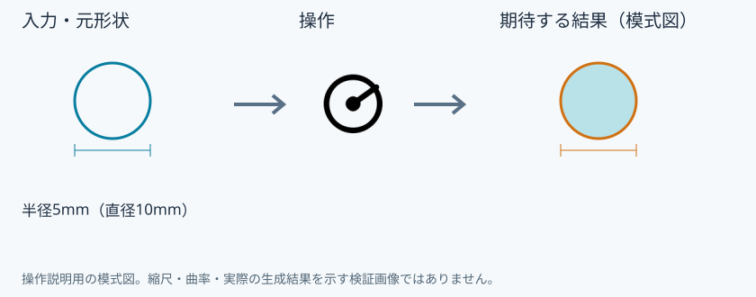
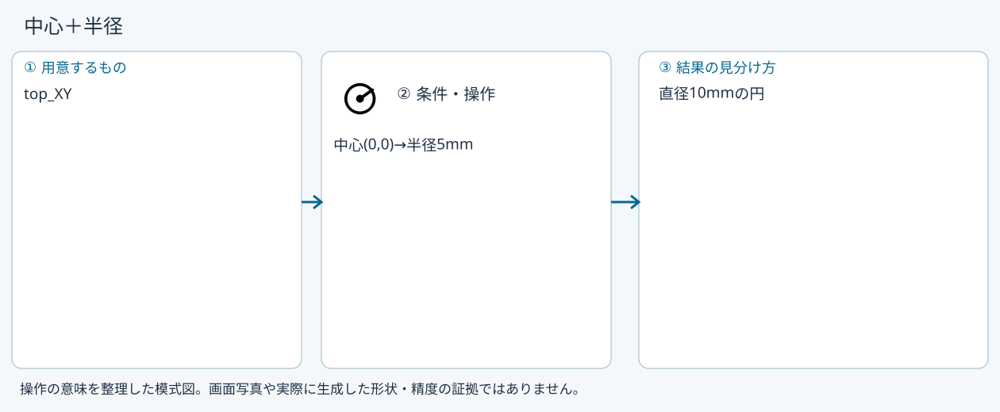
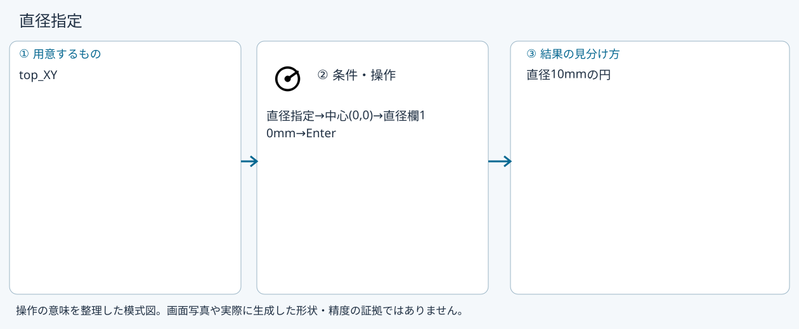
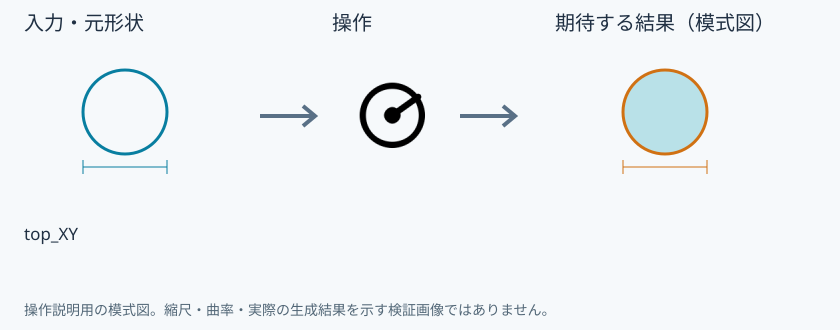
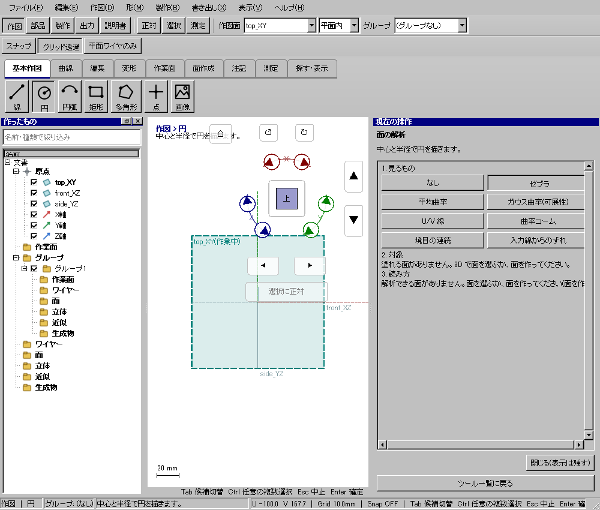

円
具体例: 半径5mmのライト輪郭を作る

準備
top_XYに正対する
操作手順
- 円を選ぶ
- 中心と半径の作り方を選ぶ
- 中心(0,0,0)を置き、半径5mmで確定する
設定: 半径5mm（直径10mm）
結果を確認
折れ線でなく円の形式で閉じた輪郭ができる。
取消・やり直し
未確定入力をEscで取り消します。道具を終えるときは選択(V)または別の道具へ切り替えます。 確定済みの文書変更はCtrl+Z、やり直しはCtrl+Yです。保存・書出し済みのファイルはUndoの対象ではありません。
進めない場合
中心と半径で円を描きます。
対象欄と3Dの強調を照合し、必要な線・面・部品を各役割へ指定します。処理中は計算表示を確認し、取消が可能な処理は取消を使います。
中心＋半径
準備: top_XY

- 中心(0,0)
- 半径5mm
確認: 直径10mmの円
直径指定
準備: top_XY

- 直径指定
- 中心(0,0)
- 直径欄10mm
- Enter
確認: 直径10mmの円
3点
準備: top_XY

- 3点の作り方
- (-5,0),(0,5),(5,0)
確認: 3点を通る円
Windows版の操作画面
